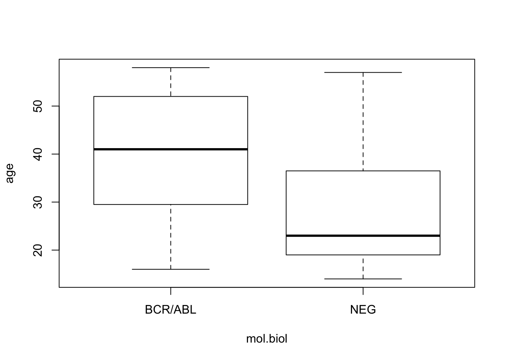
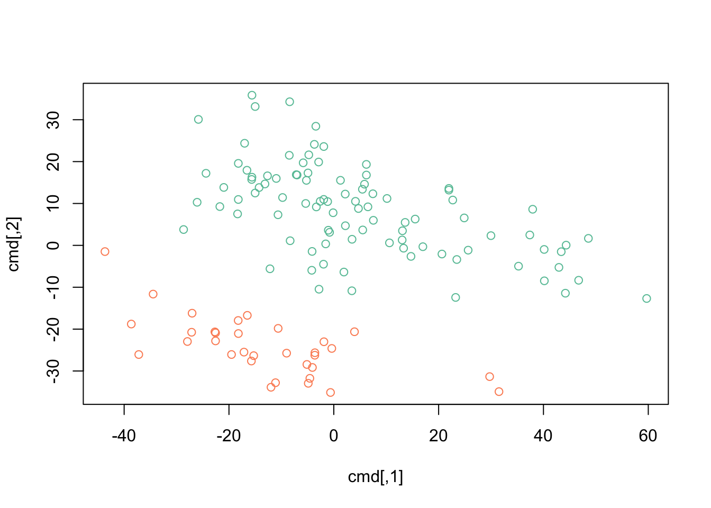

This data comes from an (old) Acute Lymphoid Leukemia microarray data set. The actual data are available at THIS LINK or by downloading using R.
download.file('https://raw.githubusercontent.com/seandavi/ITR/master/ALL-phenoData.csv',
destfile = 'ALL-phenoData.csv')Choose the file that contains ALL (acute lymphoblastic leukemia) patient information and input the date using read.csv(); for read.csv(), use row.names=1 to indicate that the first column contains row names.
path <- file.choose() # look for ALL-phenoData.csvstopifnot(file.exists(path))
pdata <- read.csv(path, row.names=1)Check out the help page ?read.delim for input options. The exercises use ?read.csv; Can you guess why? Explore basic properties of the object you’ve created, for instance…
class(pdata)## [1] "data.frame"colnames(pdata)## [1] "cod" "diagnosis" "sex" "age"
## [5] "BT" "remission" "CR" "date.cr"
## [9] "t.4.11." "t.9.22." "cyto.normal" "citog"
## [13] "mol.biol" "fusion.protein" "mdr" "kinet"
## [17] "ccr" "relapse" "transplant" "f.u"
## [21] "date.last.seen"dim(pdata)## [1] 128 21head(pdata)## cod diagnosis sex age BT remission CR date.cr t.4.11. t.9.22.
## 01005 1005 5/21/1997 M 53 B2 CR CR 8/6/1997 FALSE TRUE
## 01010 1010 3/29/2000 M 19 B2 CR CR 6/27/2000 FALSE FALSE
## 03002 3002 6/24/1998 F 52 B4 CR CR 8/17/1998 NA NA
## 04006 4006 7/17/1997 M 38 B1 CR CR 9/8/1997 TRUE FALSE
## 04007 4007 7/22/1997 M 57 B2 CR CR 9/17/1997 FALSE FALSE
## 04008 4008 7/30/1997 M 17 B1 CR CR 9/27/1997 FALSE FALSE
## cyto.normal citog mol.biol fusion.protein mdr kinet ccr
## 01005 FALSE t(9;22) BCR/ABL p210 NEG dyploid FALSE
## 01010 FALSE simple alt. NEG <NA> POS dyploid FALSE
## 03002 NA <NA> BCR/ABL p190 NEG dyploid FALSE
## 04006 FALSE t(4;11) ALL1/AF4 <NA> NEG dyploid FALSE
## 04007 FALSE del(6q) NEG <NA> NEG dyploid FALSE
## 04008 FALSE complex alt. NEG <NA> NEG hyperd. FALSE
## relapse transplant f.u date.last.seen
## 01005 FALSE TRUE BMT / DEATH IN CR <NA>
## 01010 TRUE FALSE REL 8/28/2000
## 03002 TRUE FALSE REL 10/15/1999
## 04006 TRUE FALSE REL 1/23/1998
## 04007 TRUE FALSE REL 11/4/1997
## 04008 TRUE FALSE REL 12/15/1997summary(pdata$sex)## F M NA's
## 42 83 3summary(pdata$cyto.normal)## Mode FALSE TRUE NA's
## logical 69 24 35Remind yourselves about various ways to subset and access columns of a data.frame
pdata[1:5, 3:4]## sex age
## 01005 M 53
## 01010 M 19
## 03002 F 52
## 04006 M 38
## 04007 M 57pdata[1:5, ]## cod diagnosis sex age BT remission CR date.cr t.4.11. t.9.22.
## 01005 1005 5/21/1997 M 53 B2 CR CR 8/6/1997 FALSE TRUE
## 01010 1010 3/29/2000 M 19 B2 CR CR 6/27/2000 FALSE FALSE
## 03002 3002 6/24/1998 F 52 B4 CR CR 8/17/1998 NA NA
## 04006 4006 7/17/1997 M 38 B1 CR CR 9/8/1997 TRUE FALSE
## 04007 4007 7/22/1997 M 57 B2 CR CR 9/17/1997 FALSE FALSE
## cyto.normal citog mol.biol fusion.protein mdr kinet ccr
## 01005 FALSE t(9;22) BCR/ABL p210 NEG dyploid FALSE
## 01010 FALSE simple alt. NEG <NA> POS dyploid FALSE
## 03002 NA <NA> BCR/ABL p190 NEG dyploid FALSE
## 04006 FALSE t(4;11) ALL1/AF4 <NA> NEG dyploid FALSE
## 04007 FALSE del(6q) NEG <NA> NEG dyploid FALSE
## relapse transplant f.u date.last.seen
## 01005 FALSE TRUE BMT / DEATH IN CR <NA>
## 01010 TRUE FALSE REL 8/28/2000
## 03002 TRUE FALSE REL 10/15/1999
## 04006 TRUE FALSE REL 1/23/1998
## 04007 TRUE FALSE REL 11/4/1997head(pdata[, 3:5])## sex age BT
## 01005 M 53 B2
## 01010 M 19 B2
## 03002 F 52 B4
## 04006 M 38 B1
## 04007 M 57 B2
## 04008 M 17 B1tail(pdata[, 3:5], 3)## sex age BT
## 65003 M 30 T3
## 83001 M 29 T2
## LAL4 <NA> NA Thead(pdata$age)## [1] 53 19 52 38 57 17head(pdata$sex)## [1] M M F M M M
## Levels: F Mhead(pdata[pdata$age > 21,])## cod diagnosis sex age BT remission CR date.cr t.4.11. t.9.22.
## 01005 1005 5/21/1997 M 53 B2 CR CR 8/6/1997 FALSE TRUE
## 03002 3002 6/24/1998 F 52 B4 CR CR 8/17/1998 NA NA
## 04006 4006 7/17/1997 M 38 B1 CR CR 9/8/1997 TRUE FALSE
## 04007 4007 7/22/1997 M 57 B2 CR CR 9/17/1997 FALSE FALSE
## 08001 8001 1/15/1997 M 40 B2 CR CR 3/26/1997 FALSE FALSE
## 08011 8011 8/21/1998 M 33 B3 CR CR 10/8/1998 FALSE FALSE
## cyto.normal citog mol.biol fusion.protein mdr kinet ccr
## 01005 FALSE t(9;22) BCR/ABL p210 NEG dyploid FALSE
## 03002 NA <NA> BCR/ABL p190 NEG dyploid FALSE
## 04006 FALSE t(4;11) ALL1/AF4 <NA> NEG dyploid FALSE
## 04007 FALSE del(6q) NEG <NA> NEG dyploid FALSE
## 08001 FALSE del(p15) BCR/ABL p190 NEG <NA> FALSE
## 08011 FALSE del(p15/p16) BCR/ABL p190/p210 NEG dyploid FALSE
## relapse transplant f.u date.last.seen
## 01005 FALSE TRUE BMT / DEATH IN CR <NA>
## 03002 TRUE FALSE REL 10/15/1999
## 04006 TRUE FALSE REL 1/23/1998
## 04007 TRUE FALSE REL 11/4/1997
## 08001 TRUE FALSE REL 7/11/1997
## 08011 FALSE TRUE BMT / DEATH IN CR <NA>It seems from below that there are 17 females over 40 in the data set. However, some individuals have NA for the age and / or sex, and these NA values propagate through some computations. Use table() to summarize the number of females over 40, and the number of samples for which this classification cannot be determined. When R encounters an NA value in a subscript index, it introduces an NA into the result. Observe this (rows of NA values introduced into the result) when subsetting using [ versus using the subset() function.
idx <- pdata$sex == "F" & pdata$age > 40
table(idx, useNA="ifany")## idx
## FALSE TRUE <NA>
## 108 17 3dim(pdata[idx,]) # WARNING: 'NA' rows introduced## [1] 20 21tail(pdata[idx,])## cod diagnosis sex age BT remission CR
## 49006 49006 8/12/1998 F 43 B2 CR CR
## 57001 57001 1/29/1997 F 53 B3 <NA> DEATH IN INDUCTION
## 62001 62001 11/11/1997 F 50 B4 REF REF
## NA.1 <NA> <NA> <NA> NA <NA> <NA> <NA>
## 02020 2020 3/23/2000 F 48 T2 <NA> DEATH IN INDUCTION
## NA.2 <NA> <NA> <NA> NA <NA> <NA> <NA>
## date.cr t.4.11. t.9.22. cyto.normal citog mol.biol
## 49006 11/19/1998 NA NA NA <NA> BCR/ABL
## 57001 <NA> FALSE FALSE TRUE normal NEG
## 62001 <NA> FALSE TRUE FALSE t(9;22)+other BCR/ABL
## NA.1 <NA> NA NA NA <NA> <NA>
## 02020 <NA> FALSE FALSE FALSE complex alt. NEG
## NA.2 <NA> NA NA NA <NA> <NA>
## fusion.protein mdr kinet ccr relapse transplant f.u
## 49006 p210 NEG dyploid FALSE TRUE FALSE REL
## 57001 <NA> NEG hyperd. NA NA NA <NA>
## 62001 <NA> NEG hyperd. NA NA NA <NA>
## NA.1 <NA> <NA> <NA> NA NA NA <NA>
## 02020 <NA> NEG dyploid NA NA NA <NA>
## NA.2 <NA> <NA> <NA> NA NA NA <NA>
## date.last.seen
## 49006 4/26/1999
## 57001 <NA>
## 62001 <NA>
## NA.1 <NA>
## 02020 <NA>
## NA.2 <NA>dim(subset(pdata, idx)) # BETTER: no NA rows## [1] 17 21dim(subset(pdata, (sex == "F") & (age > 40))) # alternative## [1] 17 21tail(subset(pdata,idx))## cod diagnosis sex age BT remission CR date.cr
## 28032 28032 9/26/1998 F 52 B1 CR CR 10/30/1998
## 30001 30001 1/16/1997 F 54 B3 <NA> DEATH IN INDUCTION <NA>
## 49006 49006 8/12/1998 F 43 B2 CR CR 11/19/1998
## 57001 57001 1/29/1997 F 53 B3 <NA> DEATH IN INDUCTION <NA>
## 62001 62001 11/11/1997 F 50 B4 REF REF <NA>
## 02020 2020 3/23/2000 F 48 T2 <NA> DEATH IN INDUCTION <NA>
## t.4.11. t.9.22. cyto.normal citog mol.biol fusion.protein
## 28032 TRUE FALSE FALSE t(4;11) ALL1/AF4 <NA>
## 30001 FALSE TRUE FALSE t(9;22)+other BCR/ABL p190
## 49006 NA NA NA <NA> BCR/ABL p210
## 57001 FALSE FALSE TRUE normal NEG <NA>
## 62001 FALSE TRUE FALSE t(9;22)+other BCR/ABL <NA>
## 02020 FALSE FALSE FALSE complex alt. NEG <NA>
## mdr kinet ccr relapse transplant f.u date.last.seen
## 28032 NEG dyploid TRUE FALSE FALSE CCR 5/16/2002
## 30001 NEG hyperd. NA NA NA <NA> <NA>
## 49006 NEG dyploid FALSE TRUE FALSE REL 4/26/1999
## 57001 NEG hyperd. NA NA NA <NA> <NA>
## 62001 NEG hyperd. NA NA NA <NA> <NA>
## 02020 NEG dyploid NA NA NA <NA> <NA>## robust `[`: exclude NA values
dim(pdata[idx & !is.na(idx),])## [1] 17 21Use the mol.biol column to subset the data to contain just individuals with ‘BCR/ABL’ or ‘NEG’, e.g.,
bcrabl <- subset(pdata, mol.biol %in% c("BCR/ABL", "NEG"))The mol.biol column is a factor, and retains all levels even after subsetting. It is sometimes convenient to retain factor levels, but in our case we use droplevels() to removed unused levels
bcrabl$mol.biol <- droplevels(bcrabl$mol.biol)The BT column is a factor describing B- and T-cell subtypes
levels(bcrabl$BT)## [1] "B" "B1" "B2" "B3" "B4" "T" "T1" "T2" "T3" "T4"How might one collapse B1, B2, … to a single type B, and likewise for T1, T2, …, so there are only two subtypes, B and T? One strategy is to replace two-letter level (e.g., B1) with the single-letter level (e.g., B). Do this using substring() to select the first letter of level, and update the previous levels with the new value using levels<-.
table(bcrabl$BT)##
## B B1 B2 B3 B4 T T1 T2 T3 T4
## 4 9 35 22 9 5 1 15 9 2levels(bcrabl$BT) <- substring(levels(bcrabl$BT), 1, 1)
table(bcrabl$BT)##
## B T
## 79 32Use aggregate() to count the number of samples with B- and T-cell types in each of the BCR/ABL and NEG groups
aggregate(rownames(bcrabl) ~ BT + mol.biol, bcrabl, length)## BT mol.biol rownames(bcrabl)
## 1 B BCR/ABL 37
## 2 B NEG 42
## 3 T NEG 32Use aggregate() to calculate the average age of males and females in the BCR/ABL and NEG treatment groups.
aggregate(age ~ mol.biol + sex, bcrabl, mean)## mol.biol sex age
## 1 BCR/ABL F 39.9
## 2 NEG F 30.4
## 3 BCR/ABL M 40.5
## 4 NEG M 27.2Use t.test() to compare the age of individuals in the BCR/ABL versus NEG groups; visualize the results using boxplot(). In both cases, use the formula interface. Consult the help page ?t.test and re-do the test assuming that variance of ages in the two groups is identical. What parts of the test output change?
t.test(age ~ mol.biol, bcrabl)##
## Welch Two Sample t-test
##
## data: age by mol.biol
## t = 5, df = 69, p-value = 8e-06
## alternative hypothesis: true difference in means is not equal to 0
## 95 percent confidence interval:
## 7.14 17.22
## sample estimates:
## mean in group BCR/ABL mean in group NEG
## 40.2 28.1boxplot(age ~ mol.biol, bcrabl)
This is a classic microarray experiment. Microarrays consist of ‘probesets’ that interogate genes for their level of expression. In the experiment we’re looking at, there are 12625 probesets measured on each of the 128 samples. The raw expression levels estimated by microarray assays require considerable pre-processing, the data we’ll work with has been pre-processed.
Start by finding the expression data file on disk.
path <- file.choose() # look for ALL-expression.csv
stopifnot(file.exists(path))The data is stored in ‘comma-separate value’ format, with each probeset occupying a line, and the expression value for each sample in that probeset separated by a comma. Input the data using read.csv(). There are three challenges:
row.names=1 to read.csv().check.colnames=FALSE to over-ride R’s default.read.csv() returns a data.frame. We could use a data.frame to work with our data, but really it is a matrix() – the columns are of the same type and measure the same thing. Use as.matrix() to coerce the data.frame we input to a matrix.exprs <- read.csv(path, row.names=1, check.names=FALSE)
exprs <- as.matrix(exprs)
class(exprs)## [1] "matrix"dim(exprs)## [1] 12625 128exprs[1:6, 1:10]## 01005 01010 03002 04006 04007 04008 04010 04016 06002 08001
## 1000_at 7.60 7.48 7.57 7.38 7.91 7.07 7.47 7.54 7.18 7.74
## 1001_at 5.05 4.93 4.80 4.92 4.84 5.15 5.12 5.02 5.29 4.63
## 1002_f_at 3.90 4.21 3.89 4.21 3.42 3.95 4.15 3.58 3.90 3.63
## 1003_s_at 5.90 6.17 5.86 6.12 5.69 6.21 6.29 5.67 5.84 5.88
## 1004_at 5.93 5.91 5.89 6.17 5.62 5.92 6.05 5.74 5.99 5.75
## 1005_at 8.57 10.43 9.62 9.94 9.98 10.06 10.66 11.27 8.81 10.17range(exprs)## [1] 1.98 14.13We’ll make use of the data describing the samples
path <- file.choose() # look for ALL-phenoData.csv
stopifnot(file.exists(path))pdata <- read.csv(path, row.names=1)
class(pdata)## [1] "data.frame"dim(pdata)## [1] 128 21head(pdata)## cod diagnosis sex age BT remission CR date.cr t.4.11. t.9.22.
## 01005 1005 5/21/1997 M 53 B2 CR CR 8/6/1997 FALSE TRUE
## 01010 1010 3/29/2000 M 19 B2 CR CR 6/27/2000 FALSE FALSE
## 03002 3002 6/24/1998 F 52 B4 CR CR 8/17/1998 NA NA
## 04006 4006 7/17/1997 M 38 B1 CR CR 9/8/1997 TRUE FALSE
## 04007 4007 7/22/1997 M 57 B2 CR CR 9/17/1997 FALSE FALSE
## 04008 4008 7/30/1997 M 17 B1 CR CR 9/27/1997 FALSE FALSE
## cyto.normal citog mol.biol fusion.protein mdr kinet ccr
## 01005 FALSE t(9;22) BCR/ABL p210 NEG dyploid FALSE
## 01010 FALSE simple alt. NEG <NA> POS dyploid FALSE
## 03002 NA <NA> BCR/ABL p190 NEG dyploid FALSE
## 04006 FALSE t(4;11) ALL1/AF4 <NA> NEG dyploid FALSE
## 04007 FALSE del(6q) NEG <NA> NEG dyploid FALSE
## 04008 FALSE complex alt. NEG <NA> NEG hyperd. FALSE
## relapse transplant f.u date.last.seen
## 01005 FALSE TRUE BMT / DEATH IN CR <NA>
## 01010 TRUE FALSE REL 8/28/2000
## 03002 TRUE FALSE REL 10/15/1999
## 04006 TRUE FALSE REL 1/23/1998
## 04007 TRUE FALSE REL 11/4/1997
## 04008 TRUE FALSE REL 12/15/1997Some of the results below involve plots, and it’s convenient to choose pretty and functional colors. We use the RColorBrewer package; see colorbrewer.org
library(RColorBrewer) ## not available? install package via RStudio
highlight <- brewer.pal(3, "Set2")[1:2]`highlight’ is a vector of length 2, light and dark green.
For more options see ?RColorBrewer and to view the predefined palettes display.brewer.all()
We’ll add a column to pdata, derived from the BT column, to indicate whether the sample is B-cell or T-cell ALL.
pdata$BorT <- factor(substr(pdata$BT, 1, 1))Microarray expression data is usually represented as a matrix of genes as rows and samples as columns. Statisticians usually think of their data as samples as rows, features as columns. So we’ll transpose the expression values
exprs <- t(exprs)Confirm that the pdata rows correspond to the exprs rows.
stopifnot(identical(rownames(pdata), rownames(exprs)))Reduce high-dimensional data to lower dimension for visualization.
Calculate distance between samples (requires that the expression matrix be transposed).
d <- dist(exprs)Use the cmdscale() function to summarize the distance matrix into two points in two dimensions.
cmd <- cmdscale(d)Visualize the result, coloring points by B- or T-cell status
plot(cmd, col=highlight[pdata$BorT])